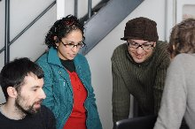

<html>
</html>
<!DOCTYPE html 
    PUBLIC "-//W3C//DTD XHTML 1.0 Transitional//EN" 
    "http://www.w3.org/TR/xhtml1/DTD/xhtml1-transitional.dtd">
<html xmlns="http://www.w3.org/1999/xhtml">
<head>
  <title>GraphicsLab</title>
  <meta http-equiv="content-type" content="text/html; charset=utf-8">
  <link rel='stylesheet' href='grafiklabor.css' type='text/css' />
</head>
<body>
<p><a href="../"></a></p>
<div id="content">
  <h1>Grafik<span class="blue">labor</span><br />
  <span style="font-size:x-large;">Dock18, Zurich</span></h1>


  <p>Das Grafiklabor ist der Treffpunkt für Anwender, Grafiker, Lehrer, Fans und Entwickler von Freier Software im grafischen Bereich.</p>

  <p>Wir werden zusammen neue Programme ausprobieren, durchtesten und auf den Kopf stellen.</p>

  </p>Dazu gibt's jeweils ein Hauptthema: in April werden wir uns mit der Fotobearbeitung anfangen!

  </p>Für Neulinge wird es eine kurze Einführung in GIMP geben mit – anschliessend – ein paar Übungen, um das Programm kennenzulernen.</p>

  <p>Dazu werden wir über Farbkorrektur, digitale Fotoentwicklung, Bildermanagement u.s.w. sprechen.</p>

  <h2>Material</h2>
  <ul>

      <li>Jeder bringt seinen Laptop mit. Es sind drei vorinstallierte Laptops vorhanden!</lI>
      <li>Wenn möglich hast du GIMP (http://www.gimp.org) und eventuell Phatch bereits installiert.</li>
      <li>Eigene Digitalfotos und/oder Digitalkamera mitnehmen (Zwei Digitalkameras sind vorhanden)</li>
  </ul>

  <h2>Kosten</h2>
  <ul>
    <li>Für 60.-- wirst du regulärer Student in der Dock18 Akademie für Medienkulturen der Welt und erhältst ein Studienbuch; alle anderen können eine Spende hinterlassen.</li>
  </ul>

  <h2>Wann und wo?</h2>
    <ul>
      <li>Im <a href="http://www.dock18.ch">Dock18</a>, <a href="http://www.rotefabrik.ch">Rote Fabrik</a>, <a href="http://map.search.ch/zuerich/rote-fabrik">Zürich</a></li>
      <li>Jeden 1er Sonntag im Monat von 14 bis 18 Uhr:
        <ul>
          <li>
          7. März: <em>Fotobearbeiung</em><br />
          Für Neulinge wird es eine kurze Einführung in GIMP geben mit – anschliessend – ein paar Übungen, um das Programm kennenzulernen.<br />
          Dazu werden wir über Farbkorrektur, digitale Fotoentwicklung, Bildermanagement u.s.w. sprechen.
          </li>
          <li>18. April (am 4. April werden Hasen im Garten gejagt): Bildbearbeitung und Computermalerei</li>
          <li>2. Mai: <a href="inkscape.html">Vektorgrafik</a></li>
          <li>6. Juni: DTP</li>
          <li>4. Juli: Offene Werkstatt</li>
        </ul>
    </li>
  </ul>
</div> <!-- content -->
<div id="sidebar">
<h2>GrafikLabor 01<br />
<span class="blue">7. März</span> 2010</h2>
</h2>
  <p></p>
  <p></p>
  <p></p>
  <p></p>
  <p></p>
  <p></p>
</div>
</body>
</html>
